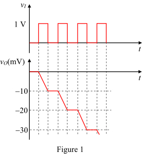

From the output voltage sketch, for 10 mV change  is required.
is required.
Calculate the required pulses for an output voltage change of 1 V.
Therefore, total of hundred pulses are required for an output voltage change of  .
.
Refer to input voltage waveform in Figure P2.85 in the textbook.
Calculate the change in output voltage of miller integrator circuit.
The sketch of the output voltage is shown in Figure 1.

From the output voltage sketch, for 10 mV change is required.
Calculate the required pulses for an output voltage change of 1 V.
Therefore, total of hundred pulses are required for an output voltage change of .